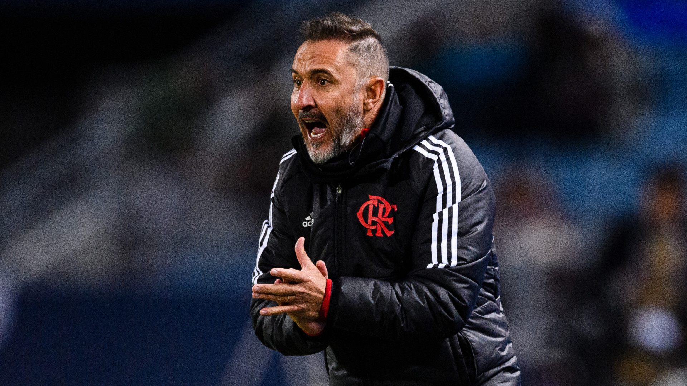
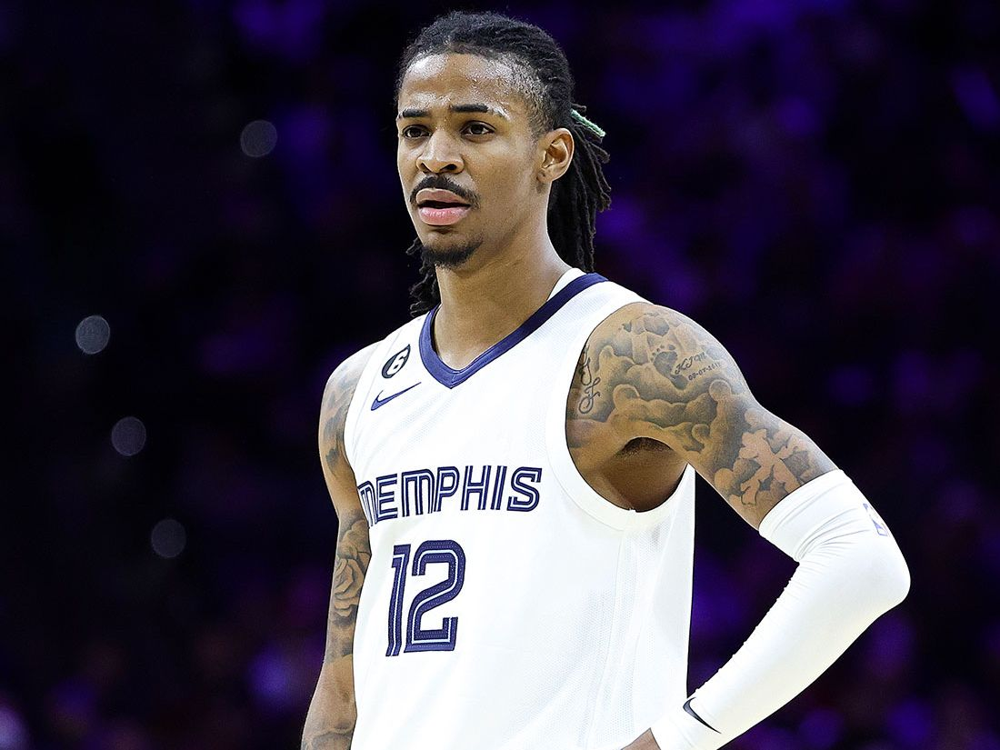

Vitor Pereira não é mais técnico do Flamengo. A demissão do técnico português
foi
oficializada nesta terça-feira, 11, após não resistir derrota para o Fluminense na final
do Campeonato Carioca por 4 a 1. Foi o quarto campeonato perdido pelo treinador no comando
do time rubro-negro na temporada. "O Clube de Regatas do Flamengo informa que o treinador
Vitor Pereira e sua comissão técnica não comandam mais o elenco profissional.
A direção agradece ao profissional e deseja sorte na continuidade da carreira", diz o
comunicado do Flamengo.

NBA suspende Ja Morant com Arma de fogo
A NBA anunciou, na tarde desta quarta-feira, que suspendeu Ja Morant por oito
jogos por
conta do incidente com uma arma de fogo no último dia 4 de março. A estrela do Memphis
Grizzlies fez uma live em seu perfil numa rede social com uma pistola na mão e, segundo a
liga, "em estado intoxicado" numa boate na região de Denver.

25 Lesões até aqui
O jogador de futebol Neymar acumula uma longa lista de lesões desde a sua
chegada ao futebol europeu, em
2013.
O brasileiro passará por cirurgia no tornozelo e deve perder o restante da temporada.
Neymar chegou à 25ª lesão, juntando as passagens por Barcelona e PSG. O levantamento é do
jornal espanhol "Marca", que ainda apontou os afastamentos por caxumba (2015) e
covid (2022)...